Joint event time Bayesian mixture cure model
Nathan Green
7 January 2021
joint_event_times.RmdJointly distributed PFS and OS event times, distributional background
We see that the expected OS survival curves are biased; over-estimating the rate. This is not the case for the ipilimumab. This is due to the additional joint component in the OS linear regression. This may be due to censoring since ipilimumab has the smallest amount. This is an area for research.
However, the model does fit well taking in to account the case-mix of the study population. The posterior prediction plots show that the Kaplan-Meier for the observed data lies within the simulated curves.
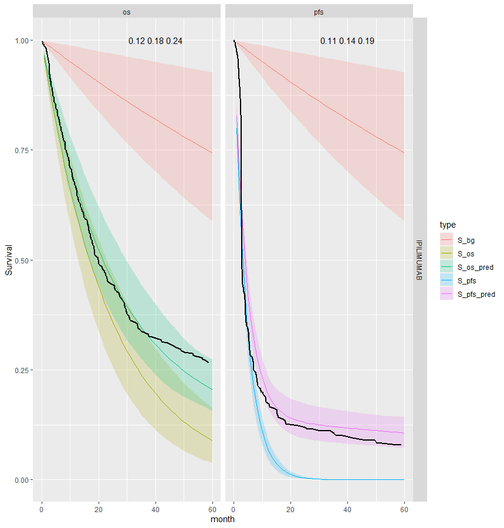
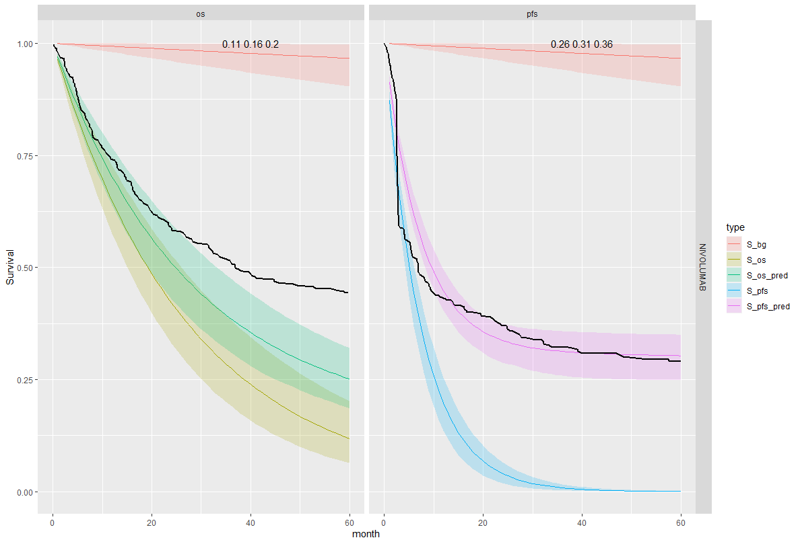
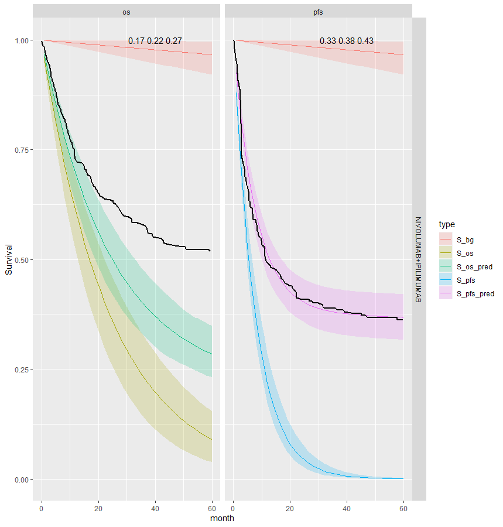
Survival distribution informed by the WHO data
However, we also want the developed model to be able to be applied to other data sets which may be smaller or noisy. Also the mortality rate for the cured study population may not be the same as the general population. Sensible prior parameter values can be taken for the life table hazard curve. After infancy the log-hazard is approximately linear and so intercept and slope estimates are simple to obtain.
In this analysis we use the more general distributional approach. This allows for more freedom in the model fitting.
Jointly distributed event times model
One effective way of modelling joint (bivariate) distributions is to factorise them into a marginal and a conditional distribution (which holds as a fundamental rule of probability). In general terms, we can then write \(p(x,y) = p(x)p(y | x)\). In the context of our model, we can use this intuition to model the joint distribution of the PFS and OS observed times (in terms of their survival curves) as: \[ S(t_{OS},t_{PFS}) = P(T_{OS} \geq t_{OS}, T_{PFS} \geq t_{PFS}) = S_{PFS} (t_{PFS}) S_{OS|PFS}(t_{OS}│T_{PFS} = t_{PFS}). \] The structure above implies that essentially we first create a marginal generalised linear regression to model the survival curve for the PFS data (as a function of relevant covariates); the second module of the model implies another generalised linear regression for the OS data, where the observed PFS data act as a covariate (in addition to other relevant predictors, which may or may not be the same used for the PFS model). Alternative specifications are possible (for instance, the generalised linear model can be applied on the scale of the hazard function, if more appropriate). This modelling approach can be visualised in the graph below.

If we factorise into marginal and conditional components to model the underlying bivariate distribution this can be written generally as
\[ OS_i \sim p(c | PFS, \phi_{iOS}, \tau_{OS}) \] \[ g_{OS}(\phi_{iOS}) = \beta_0 + \beta_1 (PFS_i - \mu_{PFS})[+ \ldots] \] \[ \mu_{OS} = g_{OS}^{-1}(\beta_0) \] \[ g_{PFS}(\phi_{iPFS}) = \alpha_0 [+ \ldots] \] \[ PFS_i \sim p(PFS | \phi_{iPFS}, \tau_{PFS}) \] \[ \mu_{PFS} = g_{PFS}^{-1}(\alpha_0) \]
The combined log-likelihood is \[ \mathcal{l} = \mathcal{l}_{OS} + \mathcal{l}_{PFS} \]
For the case with exponential OS times and exponential PFS times with centred age this gives the following.
\[ t_{iOS} \sim Exp(\phi_{iOS}) \] \[ \log(\phi_{iOS}) = \beta_0 + \beta_1 (t_{iPFS} - \bar{t}_{PFS}) + \beta_2 age_{iPFS} \] \[ \mu_{OS} = \exp(\beta_0) \] \[ \log(\phi_{iPFS}) = \alpha_0 + \alpha_1 age_{iOS} \] \[ t_{iPFS} \sim Exp(\phi_{iPFS}) \] \[ \mu_{PFS} = \exp(\alpha_0) \] \[ \bar{t}_{PFS} = 1/\mu_{PFS} \]
Where \(\bar{t}_{PFS}\) is the mean time to event for PFS. This is simple to calculate for the Exponential distribution but is more complicated for other survival distributions. The parameters \(\phi_{iOS}\) and \(\phi_{iPFS}\) are the uncured hazard rates for individual \(i\) for OS and PFS, respectively.
The background hazard rates are specified as follows
\[ t_{iOS} \sim Exp(\phi^*_{iOS}) \] \[ \log(\phi^*_{iOS}) = \beta_0^* + \beta^*_1 age_{iOS} \] \[ t_{iPFS} \sim Exp(\phi^*_{iPFS}) \] \[ \log(\phi^*_{iPFS}) = \beta_0^* + \beta^*_1 age_{iPFS} \] Notice that the coefficients \(\beta_0^*\) and \(\beta^*_1\) are the same in both equations.
Independent PFS and OS event times, distributional background
Pooled cure fraction
This is the most restrictive model and so as we would expect it gives the worse results. The OS appears better than the PFS plots; the PFS CrIs fail to contain the observed data.
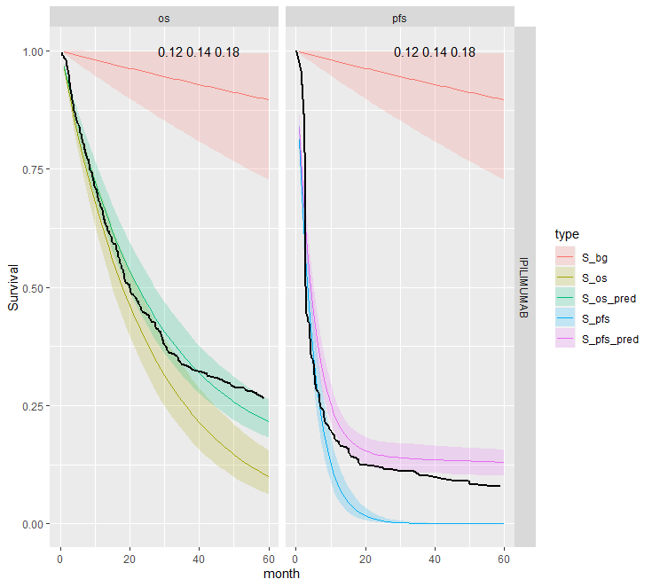
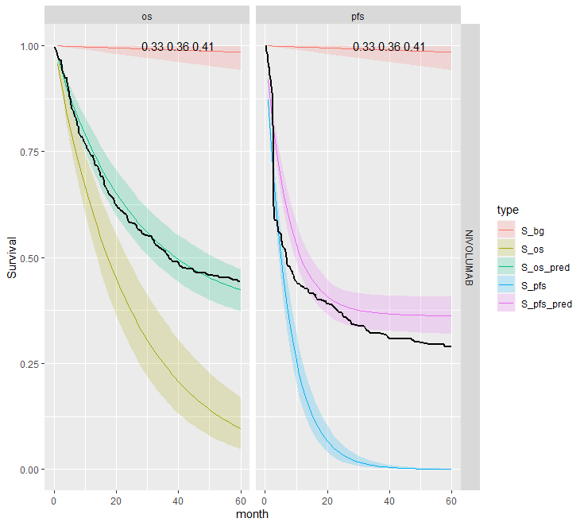
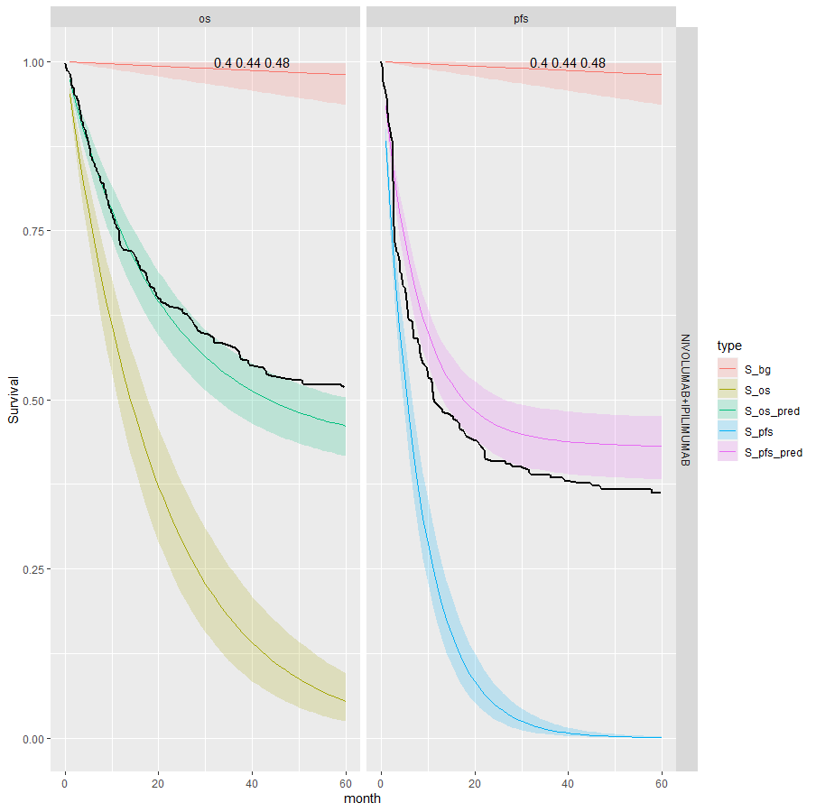
Separate cure fraction
The models with independently fit cure fraction appear to fit reasonably well. The mismatch in fit is due to the assumption of an exponential survival curve for uncured patients which does not capture the true curvature.
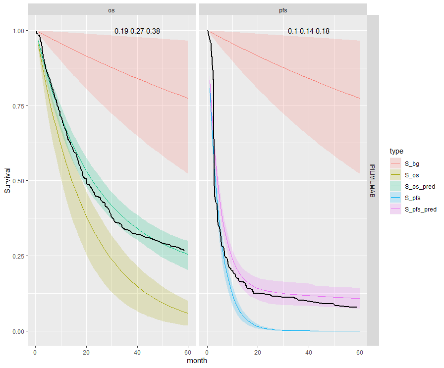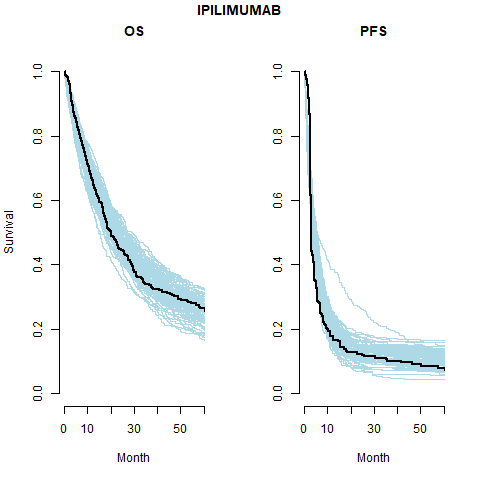
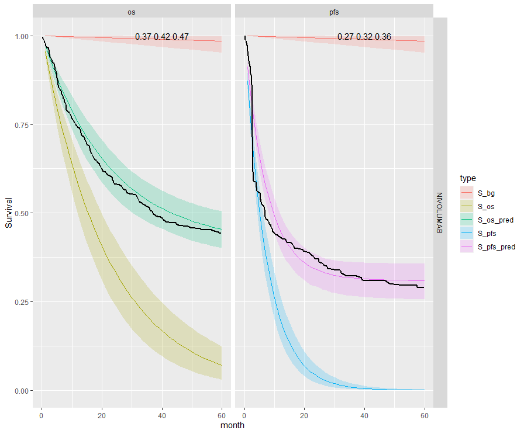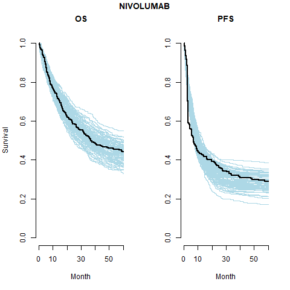
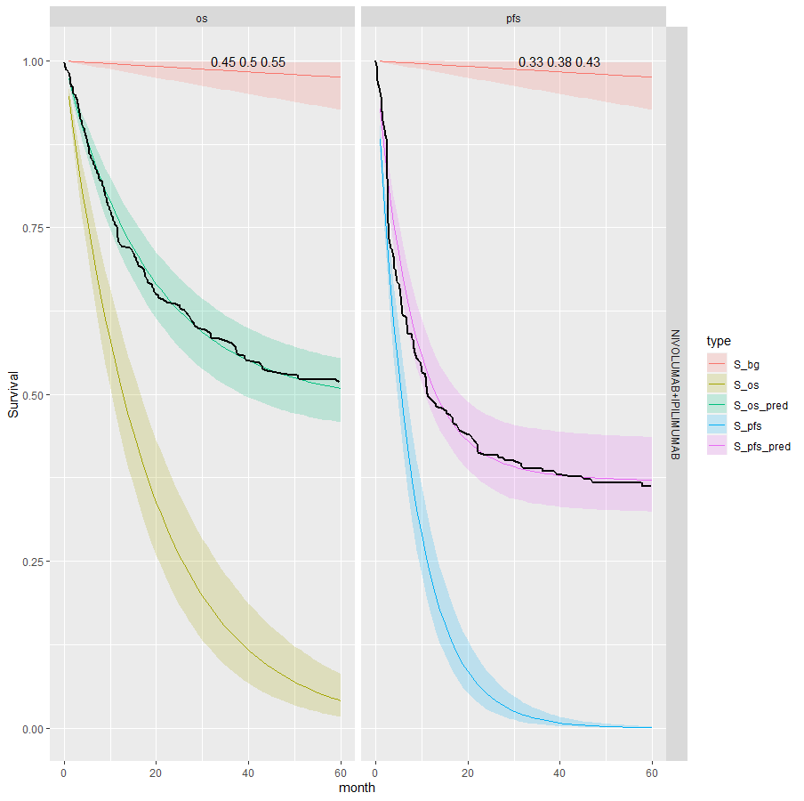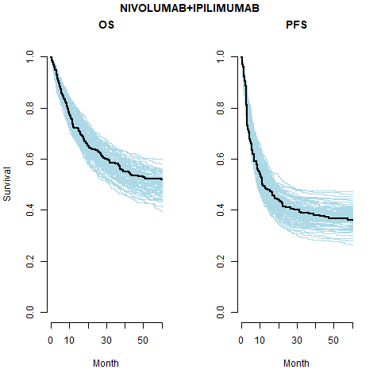
The table below summarises the cure fraction posterior distribution for each scenario.
| Event times | Cure fraction | Treatment | \(cf_{OS}\) (CrI) | \(cf_{PFS}\) (CrI) | \(\beta_{joint}\) (CrI) | |
|---|---|---|---|---|---|---|
| 1 | Independent | Pooled | IPI | 0.14 (0.12, 0.18) | 0.14 (0.12, 0.18) | |
| 2 | Independent | Pooled | NIVO | 0.36 (0.33, 0.41) | 0.36 (0.33, 0.41) | |
| 3 | Independent | Pooled | NIVO+IPI | 0.44 (0.4, 0.48) | 0.44 (0.4, 0.48) | |
| 4 | Independent | Separate | IPI | 0.27 (0.19, 0.38) | 0.14 (0.1, 0.18) | |
| 5 | Independent | Separate | NIVO | 0.42 (0.37, 0.47) | 0.32 (0.27, 0.36) | |
| 6 | Independent | Separate | NIVO+IPI | 0.5 (0.45, 0.55) | 0.38 (0.33, 0.43) | |
| 7 | Joint | Separate | IPI | 0.18 (0.12, 0.24) | 0.14 (0.11, 0.19) | -0.286 (-0.489, -0.155) |
| 8 | Joint | Separate | NIVO | 0.16 (0.1, 0.2) | 0.31 (0.26, 0.36) | -0.125 (-0.17, -0.094) |
| 9 | Joint | Separate | NIVO+IPI | 0.22 (0.17, 0.27) | 0.38 (0.33, 0.43) | -0.145 (-0.212, -0.099) |
Leave-one-out cross validation
| Model | Statistic | Estimate | SE |
|---|---|---|---|
| 4 | elpd_waic | -1834.3 | 35.6 |
| 5 | -1666.8 | 46.2 | |
| 6 | -1538.5 | 54.3 | |
| 4 | p_waic | 7.1 | 0.8 |
| 5 | 8.4 | 0.8 | |
| 6 | 9.6 | 1.4 | |
| 4 | waic | 3668.6 | 71.2 |
| 5 | 3333.6 | 92.4 | |
| 6 | 3077.1 | 108.6 |
Future work
Expand available distributions
Having shown the application of these methods to this problem we will extend the tool kit to include other standard parametric distributions are tested:
- Weibull
- Gompertz
- Log-normal
- Log-logistic
- Generalised gamma
Sensitivity analysis
Of course, when the data offer only limited amount of information, the assumptions in the prior distribution possibly exert much influence on the results - and crucially on the decision model output. We will conduct extensive sensitivity analysis and will justify assumptions in all aspects of the modelling strategy by assessing the meaning of the various distributional assumptions visually and formally.
Model checking and testing
We have already written a suite of simulation functions to create synthetic cohorts with which to test the models such that we know the true underlying data generating process.
Background survival
An alternative non-parametric approach, as used in Demiris and Sharples (2006), is to use a Gamma process to define gamma distributions at each time. A variance parameter determines the influence between times.
Average values derived from the life tables are used in the Gamma process. These are age-sex-country standardised. The below plot shows the mean, median and a sample of hazard curves for the checkmate data set. The underlying hazard curve for 0-100 year olds is shifted left depending on the starting age of an individual in the cohort.

Additional model structure
The two regression models can be extended to more complex structures, for instance by including a mixture model in one or both (and eventually by including some further correlation structure in the mixing parameters).
For this analysis it was unnecessary but we may generalise the model so that the cure fraction is dependent on covariates. Therefore, the posterior with \(\beta^{cf}\) representing the coefficients of the cure fraction regression is
\[ p(\boldsymbol{\beta^u},\boldsymbol{\beta^*}, \boldsymbol{\beta^{cf}} | \boldsymbol{\delta}, \boldsymbol{x}) \propto L(\boldsymbol{\beta^u},\boldsymbol{\beta^*}, \boldsymbol{\beta^{cf}} | \boldsymbol{\delta}, \boldsymbol{x}) g_1(\boldsymbol{\beta^{cf}}) g_2(\boldsymbol{\beta^u}) g_3(\boldsymbol{\beta^*}) \]